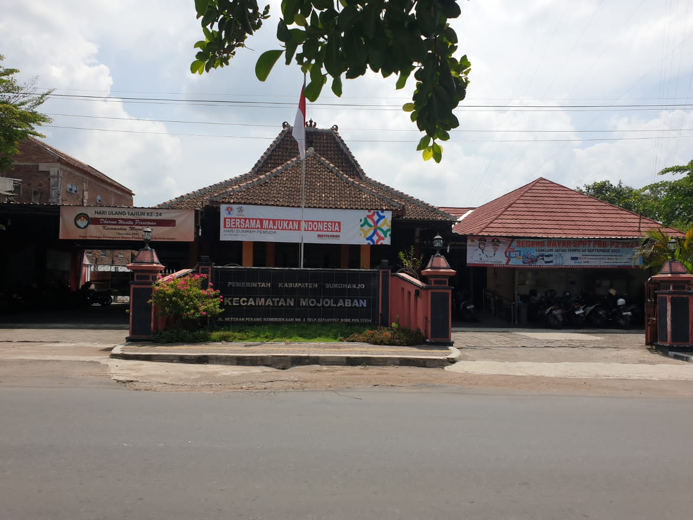

Kabupaten Sukoharjo, Jawa Tengah
Kecamatan Mojolaban
Kantor kecamatan untuk warga 15 desa, di Jl. Veteran Perang Kemerdekaan No. 4.
Informasi hari ini: Hari ini
Kecamatan Mojolaban · waktu dalam WIBCuaca · Bekonang, Mojolaban
Memuat prakiraan BMKG…
Jadwal salat hari ini
Jam saat ini: --.-- WIB
- Jadwal dihitung di perangkat Anda
Dihitung dengan kriteria Kemenag RI untuk wilayah Kab. Sukoharjo; selisih paling banyak 1 menit dari jadwal resmi Kemenag (situs luar).
Kantor Kecamatan Mojolaban
Senin–Kamis 07.00–15.30 · Jumat 07.00–14.00 WIB
(0271) 611767- kecamatanmojolaban@gmail.com
- Senin–Kamis 07.00–15.30 · Jumat 07.00–14.00
- PPID Kecamatan Mojolaban ↗Permohonan informasi publik & keberatan
- SP4N-LAPOR! ↗Pengaduan pelayanan publik, kanal nasional
Status buka dihitung dari jam operasional resmi; hari libur nasional belum diperhitungkan.
Yang sering dicari
- Mengurus KTP, KK, akta kelahiran, atau surat keterangan12 SOP pelayanan masyarakat
- Jam buka dan alamat kantor kecamatanAlamat, telepon, email, peta
- Mengajukan permohonan informasi publik (situs luar)PPID Kecamatan Mojolaban
- Menyampaikan pengaduan pelayanan publik (situs luar)SP4N-LAPOR!, kanal nasional
- Struktur organisasi kecamatanCamat, sekretariat, dan lima seksi
- Data perangkat desaDokumen resmi per desa, 2022
Berita
Dari situs PPID Kecamatan Mojolaban. Berita terbaru bertanggal 6 Oktober 2026.
Mengenal Mojolaban
Mojolaban berada di Kabupaten Sukoharjo, berbatasan dengan Kecamatan Jaten (Kabupaten Karanganyar) di utara dan timur, Kecamatan Polokarto di selatan, serta Kota Surakarta di barat.
Sebagian besar lahannya berupa sawah. Wilayahnya terbagi atas lima belas desa.
Sumber: halaman Profil, situs resmi Kecamatan Mojolaban.
Kunjungi kantor
Jl. Veteran Perang Kemerdekaan No. 4Mojolaban, Sukoharjo 57554